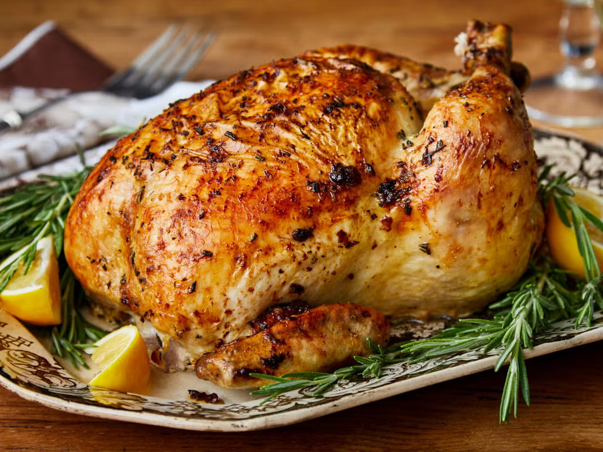

Ovnsstekt Kylling

Ingredienser
- Hel kylling [link]1EGP 170
- Olje [link]50 mlEGP 6
- Sitron [link]1EGP 2
- Løk [link]150 gEGP 3
- Poteter [link]500 gEGP 6
- Gulrot [link]200 gEGP 8
- Salt2 ss
- Paprika1 ss
- Hvitløkspulver1 ss
- Løkpulver1 ss
- Tørket Oregano1 ts
- TotaltEGP 195
Fremgangsmåte
1. La 1 hel kylling renne av vannet i 10 minutter, tørk godt med papir.
2. Gni 50 ml olje over hele kyllingen.
3. Bland 2 ss salt, 1 ss paprika, 1 ss hvitløkspulver, 1 ss løkpulver og 1 ts tørket oregano. Gni over hele kyllingen, inn og ut.
4. Del 1 sitron i to og legg inni kyllingen sammen med 150 g løk.
5. Skrell og del både 500 g poteter og 200 g gulrot i biter. Legg i en langpanne rundt kyllingen.
6. Kan gjerne stå i kjøleskapet i opptil 12 timer.
7. Varm ovn til 200°C. Stek i 10 minutter, senk til 180°C og stek til brystet når 75°C.
8. La hvile, del opp og hell stekesaften over kjøttet og grønnsakene.